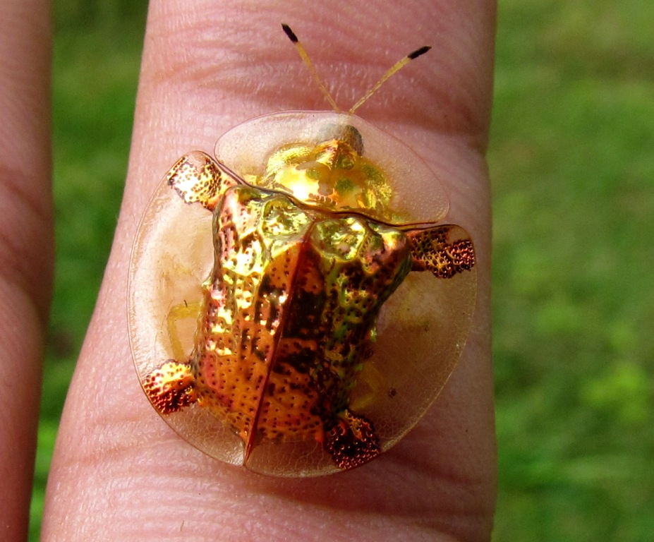

Lesson 2
Today's lesson is further your knowledge on HTML and CSS with a focus on more advanced CSS.
Lesson Goals
- Apply HTML tags: <head> <link>, <script>, <style>, <meta> to web page
- Apply tags to HTML document to effectively section content.
- Differentiate between the various image file types, as well as basic web color principles: RBG, CMKY, hexadecimal color.
- Experiment with basic CSS properties such as: background, fonts & text to style a web page.
- Connect to a web server via an FTP client; manage files both locally and remotely.
Resources
- CSS Cheat Sheet
- Mozilla's Developer Network - CSS Tutorial
- RGB Color Picker
- Download Google Chrome
- Subtle Patterns - Free background images
- FTP Info (Cyberduck.ch, Filezilla)
- server: studio.generalassemb.ly
- username: student
- password: yellowpencil
Create a basic page layout
A basic folder layout
/ /index.html /css /css/style.css /images /images/image.gif
index.html Template
<!DOCTYPE html>
<html lang="en">
<head>
<meta charset="utf-8">
<title>Page Layout with HTML DIVs</title>
<!-- external CSS link -->
<link rel="stylesheet" href="css/reset.css">
<link rel="stylesheet" href="css/style.css">
</head>
<body>
</body>
</html>
Image Types
JPEG
Pros: Full color, small
Cons: Designed for photos, not great for shapes
GIF (animated)
Pros: Alpha channel
Cons: 256 colors, can get huge

GIF (transparent)
PNG (transparent)
Pro: Highest quality possible on web. Alpha channel. Great for shapes.
Con: Larger than JPG
Box Model
I have a background